7. Comunità nelle reti
Le comunità sono una proprietà di tante reti reali: una comunità all'interno di una rete contiene dei nodi densamente connessi. I link tra nodi in comunità differenti sono poco frequenti.
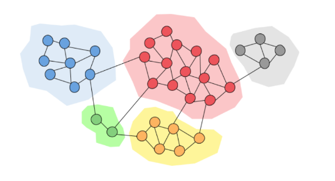
7.1 Introduzione
Possiamo pensare ai collegamenti tra nodi come un concetto di amicizia. Granovetter (1973) individuò due diverse prospettive di di amicizia:
- Amicizia strutturale: l'amicizia si distribuisce in diverse parti della rete
- Amicizia interpersonale: l'amicizia tra due persone può essere forte o debole
Un ruolo fondamentale è quello delle chiusure triadiche: se due persone in una rete hanno un amico in comune, allora c'è una più alta probabilità che questi diventino amici.
Spieghiamo il concetto di amicizia forte e debole:
- Gli archi all'interno di una struttura (es. una chiusura triadica) sono socialmente forti
- Gli archi lunghi che connettono diverse parti della rete sono socialmente deboli
Inoltre, focalizzandoci sull'informazione che naviga nella rete, possiamo dire che:
- Gli archi lunghi consentono di ottenere informazioni da parti diverse di una rete
- Gli archi all'interno di una struttura sono ridondanti in termini di accesso all'informazione
Osservazione: la perdita di una connessione forte non fa perdere informazione all'interno di una rete, al contrario, la perdita di una connessione debole causa perdita di informazione.
Osservazione: una chiusura triadica ha un alto coefficiente di clustering. Se e hanno un amico in comune, allora:
- verosimilmente incontrerà ( spende tempo con entrambi)
- e credono l'uno nell'altro poiché hanno un amico in comune
- è incentivato a legare e
Esempio: uno studio empirico di Bearman e Moody dimostra che le ragazze teenager con basso coefficiente di clustering sono più inclini al suicidio.
7.1.1 Arco ponte e ponte locale
Si definisce arco ponte un arco che, se rimosso, trasforma il grafo in un grafo disconnesso. Nell'esempio sottostante, l'arco tra e è un arco ponte.
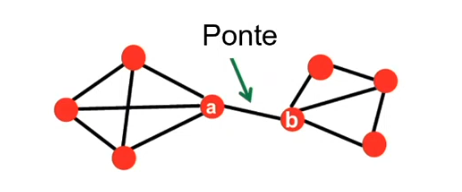
Sia un arco tra i nodi e , definiamo lo span di come la distanza tra e (endpoints dell'arco) nel caso in cui l'arco venga rimosso dal grafo. Definiamo inoltre ponte locale un arco con . Nell'esempio, l'arco tra e è un ponte locale poiché, se venisse rimosso, allora la distanza tra e sarebbe 3 ().
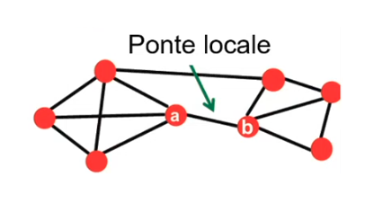
Possiamo osservare che la presenza di un ponte locale tra e ci informa implicitamente che non esiste un nodo in comune tra e . Se esistesse , allora rimosso l'arco, la distanza tra e sarebbe pari a 2 ().
Se è connesso ai nodi e , e questi ultimi sono connessi tra loro, allora parliamo di archi forti. In generale due archi forti implicano un terzo arco, ovvero esiste una chiusura triadica forte. Se non vale questa condizione, allora l'arco sarà detto debole.
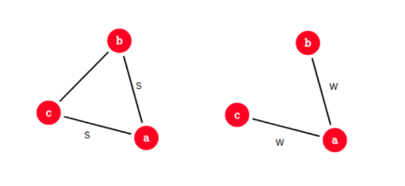
Se un nodo soddisfa una chiusura triadica forte ed è coinvolto in almeno due connessioni forti, allora un qualsiasi ponte locale adiacente ad deve essere una connessione debole.
Dimostriamolo (per assurdo): supponiamo che soddisfi una chiusura triadica forte ed abbia due connessioni forti. Sia un ponte locale ed allo stesso tempo una connessione forte. Allora deve esistere per la presenza della chiusura triadica forte. Ciò implica che non è un ponte locale (), ovvero l'assurdo.
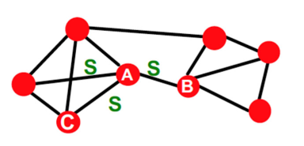
7.1.2 Neighborhood overlapping
Siano e due nodi collegati da un arco . Definiamo overlap dell'arco la quantità Dove indica l'insieme dei vicini del nodo . Quindi l'overlapping è definito come la percentuale di vicini in comune tra i due nodi collegati dall'arco.
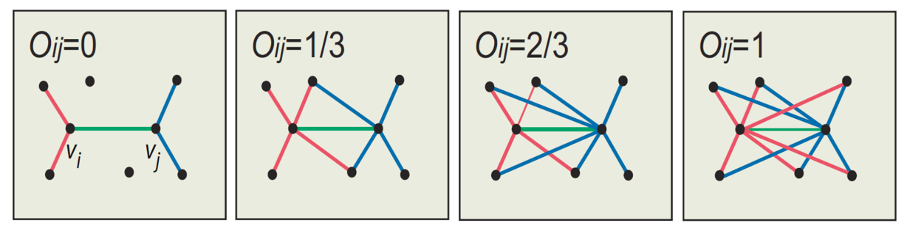
Osserviamo che quando è un ponte locale l'overlap è pari a 0, poiché non vi è nessun nodo in comune tra i due endpoint. È possibile gestire la disconnessione di un grafo basandosi sull'overlap degli archi da rimuovere: rimuovendo archi con un basso overlap, il grafo si disconnetterà prima (poiché sono connessioni poco ridondanti).
7.1.3 La teoria di Granovetter
La teoria di Granovetter suggerisce che le reti sono composte da insiemi molto connessi tra loro, chiamati comunità (cluster, gruppi, moduli). Una comunità è un insieme di nodi con tante connessioni all'interno e poche connessioni all'esterno (con il resto della rete).
7.2 Community Detection
Siamo interessati a identificare le comunità all'interno di una rete. Vedremo alcuni importanti algoritmi che lavorano sui grafi non diretti e non pesati proprio a questo scopo. Molti di questi fanno utilizzo del concetto di edge betweenness, ovvero il numero di cammini minimi che passano da un arco.
7.2.1 Algoritmo di Girvan-Newman
L'algoritmo di Girvan-Newman è un algoritmo di clustering gerarchico, basato sulla nozione di edge betweenness. L'algoritmo è pensato per archi non diretti e non pesati e consiste nell'iterare le seguenti due procedure sino a che non vi siano più archi:
- Si calcola la betweenness degli archi
- Si rimuove l'arco con più alta betweenness
L'algoritmo restituisce una decomposizione gerarchica della rete (dendogramma). Ad ogni step, le componenti connesse rappresentano le community. In seguito risponderemo alle seguenti due domande:
- Come calcolare la betweenness?
- Quante comunità vogliamo ottenere?
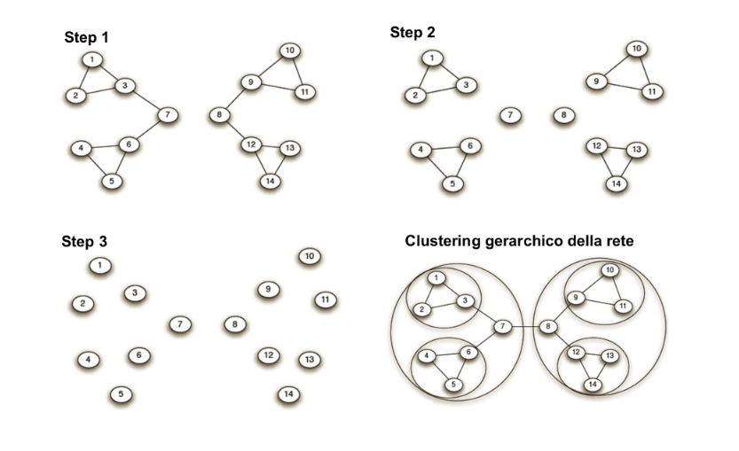
7.2.2 Calcolo della betweenness
In grafi non pesati e non direzionati, la ricerca di un cammino minimo avviene attraverso una semplice ricerca in ampiezza (BFS, breadth first search). Nel grafo di esempio è stata effettuata una ricerca in ampiezza partendo dal nodo :
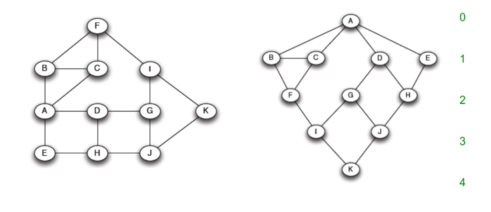
Contiamo per ogni nodo il numero di cammini minimi che vanno da ad . Tale procedura è facilmente attuabile durante la BFS. Nell'esempio, vi sono due cammini minimi che portano ad ad , uno passante per e l'altro passante per . Per cui inseriamo il valore 2 su . Calcoliamo questo valore su ogni nodo del grafo.
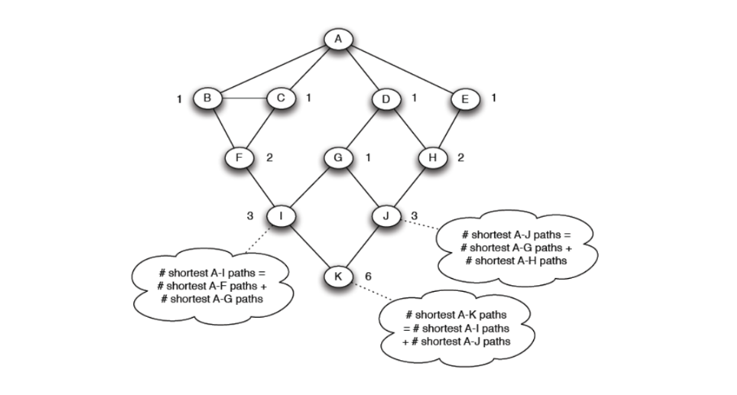
Utilizziamo questo albero per il calcolo della betweenness e illustriamo una tecnica bottom up. Supponiamo di dare un valore di flusso pari ad 1 a tutti i nodi. Partiamo dal nodo che ha 6 cammini minimi (da ). Il nodo è collegato ad che ha 3 cammini minimi, e a che ha 3 cammini minimi. Quindi i nodi hanno rispettivamente ed dei cammini minimi di . In base a questi rapporti viene diviso il flusso di ai nodi soprastanti.
Il nodo avrà a disposizione un valore di flusso pari a (1 dalla partenza, da ). ha 3 cammini minimi ed è collegato a , che ha 1 cammino minimo, e a , che ha 2 cammini minimi. Quindi i nodi hanno rispettivamente e dei cammini minimi di . Ancora una volta dividiamo il flusso in base a questi rapporti, trasferendo a e ad .
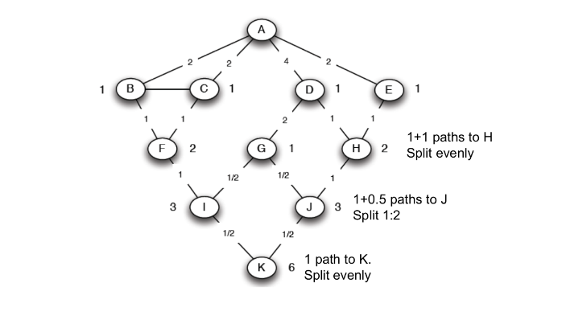
Alla fine di questa procedura, su ogni arco sarà passato un certo flusso. Questo valore viene conservato. Si ripete il processo eseguendo delle BFS su ogni nodo del grafo e per ogni BFS si sommano i valori di flusso agli archi. Alla fine dell'algoritmo si otterranno i valori di flusso per ogni nodo, che corrisponderanno alla betweenness.
7.2.3 Modularità
La modularità è una misura di come la rete è ben partizionata in comunità. Attraverso questa misura è possibile individuare il miglior partizionamento nel dendogramma risultante dall'algoritmo di Girvan-Newman, che rispetti la definizione di comunità, ovvero sottogruppi di nodi densamente connessi. Più è alta la modularità, maggiora sarà la qualità del partizionamento della rete in comunità.
Data una partizione della rete in comunità, la la modularità è tale che
Q \propto \sum_{s \in S} \Big[ \text{(#archi osservati in s}) - (\text{#archi attesi in s)} \Big]
Modello nullo
Per sapere qual è il numero atteso di archi all'interno di una comunità, è necessario prendere come riferimento un modello nullo. Un buon modello nullo è il configuration model, che mantiene la stessa distribuzione dei gradi, ma connette i nodi in modo casuale. Quindi se un nodo ha grado nel grafo reale, avrà comunque grado nel modello nullo, ma non sarà necessariamente collegato agli stessi nodi.
Data una rete reale con nodi ed archi, si costruisce una rete random . è un multigrafo: dato che i nodi si collegano in maniera casuale, allora esisterà la possibilità di collegare più volte la stessa coppia di nodi.
Se il grafo ha archi, allora possiamo individuare stubs, per immaginare cosa si intende per stub, basti tranciare la parte centrale dell'arco e dividerlo in due. Un nodo con grado avrà stub. Siano e due nodi, rispettivamente di grado e , ad una certa iterazione dell'algoritmo di costruzione del configuration model, uno stab sul nodo si collega con uno stub del nodo con probabilità Dato che ha stub, il numero atteso di archi tra e è Sommariamente, il numero atteso di archi in un multigrafo è Notando che .
Formalizzare la modularità
Una volta costruito il modello nullo, è possibile calcolare il numero atteso di archi tra due nodi. Quindi scriviamo che: Dove è la matrice di adiacenza ed il fattore normalizza la modularità tra . Empiricamente si osserva che una modularità compresa nell'intervallo indica una significativa community structure.
7.2.4 Ottimizzare la modularità
Il calcolo della betweenness è molto dispendioso, si potrebbe pensare utilizzare un algoritmo di ottimizzazione ed ottimizzare direttamente la modularità. Si dimostra che l'ottimizzazione della modularità è un problema NP-hard.
Consideriamo un sottoproblema nell'individuazione delle comunità: supponiamo di dividere la rete in due sole comunità, etichettate con -1 ed 1, e voler trovare il partizionamento che massimizzi la modularità. Definiamo un vettore detto vettore di appartenenza tale che: Riscriviamo la formula della modularità come segue: In tale formula abbiamo rimosso la prima sommatoria ed aggiunto il termine . La formula ha la stessa valenza poiché, essendovi solo due comunità, quando si analizzeranno due nodi di comunità differenti il termine , quindi il loro contributo non sarà sommato nel calcolo.
Possiamo semplificare l'espressione come segue: Dove il +1 all'interno di genera un'altra sommatoria Poiché il configuration model ha lo stesso numero di archi della rete presa in considerazione, per cui possiamo ometterlo dall'espressione (9).
Definiamo la matrice di modularità come Allora possiamo riscrivere il calcolo della modularità in forma vettoriale: Quindi Vogliamo trovare un vettore di appartenenza che massimizzi la modularità, ovvero quel partizionamento che divida il grafo in due forti comunità.
Teorema dell'autodecomposizione
Sia una matrice simmetrica e semidefinita positiva, consideriamo le autocoppie, quindi le coppie (autovalore) ed (autovettore) soluzioni dell'equazione . Si ordinino le autocoppie in maniera decrescente rispetto al proprio autovalore. Gli autovettori sono tutti ortonormali e formeranno un sistema di coordinate. Se è semidefinita positiva, tutti gli autovalori sono positivi. Dopo tali ipotesi ed osservazioni, il teorema dell'autodecomposizione asserisce che è possibile scomporre in termini dei suoi autovettori ed autovalori:
Utilizzo del teorema
La matrice è simmetrica poiché trattiamo un grafo non orientato. Riscriviamo la matrice nel calcolo della modularità in termini dei suoi autovalori ed autovettori utilizzando il teorema precedente: Quindi Se non ci sono ulteriori vincoli sul vettore , allora per massimizzare bisogna porre , ovvero l'autovettore principale. Essendo che tutti gli autovettori sono ortonormali tra loro, allora il prodotto tra e sarà nullo, per cui nella massimizzazione possiamo rimuovere la sommatoria e considerare solo l'autovettore principale: Quindi infine, anziché massimizzare direttamente la modularità, massimizziamo: Dove rimuoviamo: il quadrato, l'autovalore e il fattore normalizzante poiché non veicolano la massimizzazione della modularità.
Notiamo che se allora avrà valori diversi da . Per inserire i nodi nella giusta partizione settiamo: Dopodiché è possibile continuare la bisezione in maniera gerarchica.
7.2.5 Algoritmo veloce per l'ottimizzazione della modularità
Un algoritmo veloce per ottimizzare la modularità è il seguente:
- Si trova l'autovettore principale della matrice di modularità
- Ad esempio utilizzando il power method.
- Si dividono i nodi in base al segno degli elementi di
- Si ripete gerarchicamente sino a che
- Lo split causa un incremento della modularità e si restituisce un solo cluster
- Tutte le comunità non sono più divisibili
7.3 Spectral clustering
7.3.1 Graph partitioning
Sia un grafo non direzionato. Effettuare un bi-partizionamento (bi-partitioning task) consiste nel dividere i vertici del grafo in due gruppi disgiunti e . Come definiamo una buona partizione di ? Come possiamo trovare tale partizione in maniera efficiente?
Ma prima di tutto, cosa rende buona una partizione? Idealmente vorremmo massimizzare il numero di connessioni whitin-group (dentro il gruppo) e minimizzare il numero di connessioni between-group (tra gruppi distinti).
7.3.2 Graph cut
Partizioniamo in due gruppi e . Definiamo cut l'insieme di archi con un vertice in e l'altro in Nell'esempio sottostante si ha :
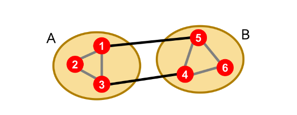
7.3.3 Minimum cut
Un criterio per ottenere un buon partizionamento del grafo è quello di minimizzare il cut, quindi scegliere come: Tuttavia abbiamo dei casi limite che tale criterio non riesce ad evitare:
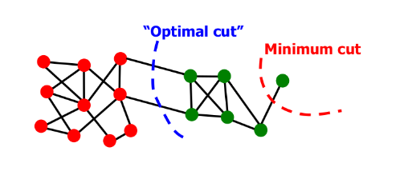
Ciò avviene poiché il minimum cut considera solo le connessioni esterne al gruppo e non la connettività tra i nodi interni al gruppo.
7.3.4 Normalized cut
Il normalize cut (Shi-Malik, '97) risolve il drawback del minimum cut andando ad introdurre il concetto di volume. Il volume di un gruppo è la somma dei pesi (se il grafo è pesato) degli archi con almeno un endpoint in , quindi Il normalized cut è definito come segue: Tale criterio produce partizioni bilanciate, tuttavia trovare il taglio ottimale è un problema NP-hard, per cui non si andrà a trovare la soluzione esatta, bensì una soluzione approssimata ma certamente più efficiente.
7.3.5 Spectral Graph Partitioning
Sia la matrice di adiacenza del grafo non direzionato (quindi se ). Sia un vettore in con componenti (pensiamolo come etichette/valori di ogni nodo in ).
Eseguendo il prodotto riga-colonna tra ed otterremo un vettore in cui l'-esima componente non è altro che la somma di tutte le etichette dei vicini di . Quindi La spectral graph teory non fa altro che analizzare lo spettro della matrice che rappresenta il grafo . Per spettro si intendono gli autovettori del grafo, ordinati per la magnitudo (forza) dei corrispondenti autovalori :
D-regular graph
Supponiamo che sia un grafo d-regolare, ovvero che tutti i nodi di abbiano grado . Inoltre supponiamo che sia connesso. Quali sono gli autovalori ed autovettori di ?
Inizializziamo tutte le componenti di ad 1 ed osserviamo: Se ogni nodo ha vicini e le etichette valgono tutte 1, allora le componenti del vettore risultante saranno tutte pari a (poiché l'-esima componente non è altro che la somma di tutte le etichette dei vicini di .). Questo vuol dire che: Dove , quindi la coppia e è una autocoppia.
D-regular graph con due componenti
Se è disconnesso ed ha 2 componenti, ognuna -regolare, allora succede che le righe della matrice di adiacenza assumeranno due forme differenti:
- Se appartiene alla componente , avrà 1 in nodi interni a e 0 nei rimanenti
- quindi
- Se appartiene alla componente , avrà 1 in nodi interni a e 0 nei rimanenti
- quindi
In entrambi i casi si ha che . L'intuizione è la seguente: se con due componenti separate i due autovalori sono uguali, allora se esiste qualche arco tra le due componenti, gli autovalori resteranno pressoché uguali.
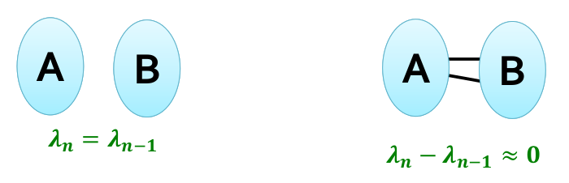
Inoltre gli autovettori sono ortogonali tra loro, quindi . In un grafo -regolare, il primo autovettore sarà . Essendo che il prodotto scalare è nullo, allora sicuramente il secondo vettore dovrà contenere anche dei valori negativi.
L'intuizione alla base dello spectral clustering consiste nel prendere il secondo autovettore e suddividere i nodi in base al segno: tutti i nodi la cui rispettiva componente è non negativa andranno nel gruppo , tutti gli altri andranno nel gruppo .
Matrice laplaciana
Sia una matrice di adiancenza del grafo , di dimensione . Sotto ipotesi di grafo non direzionato, la matrice di adiacenza è simmetrica, con autovettori reali ed ortogonali.
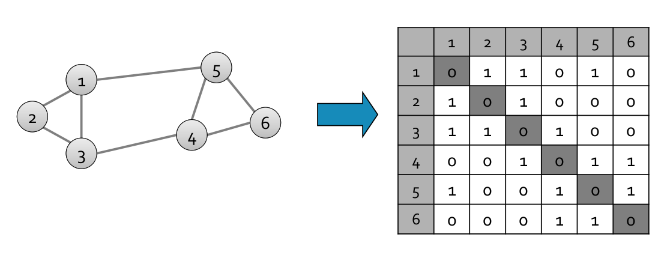
Sia la degree matrix del grafo , ovvero una matrice diagonale di dimensione in cui l'elemento .
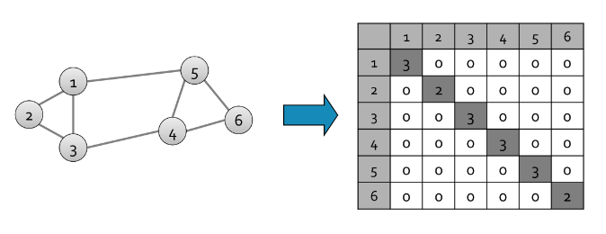
Definiamo la matrice laplaciana del grafo come una matrice simmetrica di dimensione definita come .
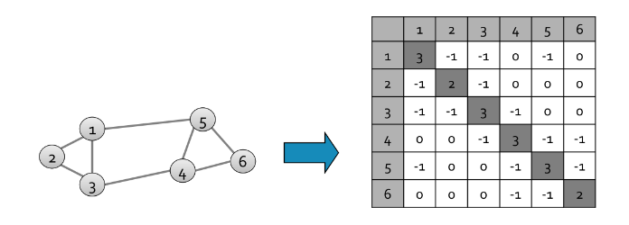
Una autocoppia banale della matrice è data dall'autovettore e dall'autovalore , questo poichè la moltiplicazione riga colonna con un vettore corrisponde a sommare gli elementi della riga e, possiamo osservare, che la somma di ogni riga nella matrice laplaciana è 0. La matrice Laplaciana gode delle seguenti proprietà:
- (a) Ha autovalori reali non negativi
- Ha autovettori reali ed ortogonali
- (b) per ogni autovettore
- (c) È semidefinita positiva ()
- Direzionando casualmente , possiamo porre ovvero la sua matrice di incidenza.
Alcune dimostrazioni:
- (moltiplicazione del vettore per se stesso è )
- sia un autovalore di , dalla ne segue che quindi (dato che è autovettore) (nota che poiché è unitario).
7.3.6 Autocoppia di Fiedler
Diamo per assunto che per una generica matrice simmetrica valga la seguente proprietà: L'autovalore viene chiamato autovalore di Fiedler ed il suo corrispettivo autovettore prende il nome di vettore di Fiedler.
Dato che la matrice laplaciana è una matrice simmetrica, possiamo scrivere che: Focalizziamoci sul prodotto al numeratore: Adesso scomponiamo la matrice laplaciana Dato che per è una matrice diagonale, allora tutti i valori al di fuori della diagonale varranno 0. Inoltre la matrice di adiacenza ha valori diversi da 0 solo se esiste un arco tra i due nodi, quindi riscriviamo l'espressione come segue: Essendo un grafo non direzionato considereremo al secondo membro lo stesso arco 2 volte. Osserviamo che, per ogni arco presente nel grafo, saranno presenti ed dal primo membro, e al secondo membro. Questo sembra essere proprio un quadrato di binomio, quindi riscriviamo: Imponiamo dei vincoli sul vettore :
- (a) sarà un vettore unitario
- (b) sarà ortogonale al primo autovettore
- Quindi
- Ovvero vi saranno sia componenti positive che negative
Quindi scriviamo Tenendo conto dei vincoli imposti (essendo il denominatore pari ad 1 è possibile rimuoverlo dalla minimizzazione). Nella pratica vogliamo assegnar nel vettore dei valori positivi ai nodi di un gruppo e dei valori negativi ai nodi dell'altro gruppo tale che vi siano pochi archi che attraversino lo 0.
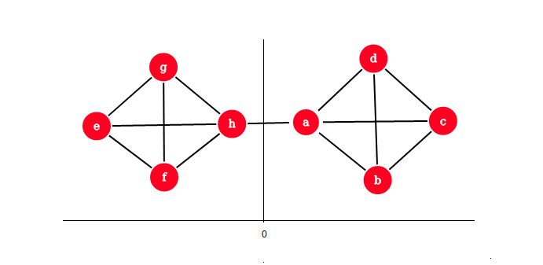
Ritornando al taglio ottimale, esprimiamo come un vettore tale che Per ottenere una partizione (sub)ottimale si minimizza l'espressione Tuttavia non è possibile risolvere tale equazione in modo esatto, per cui si rilassa ammettendo valori reali (e non solo -1 ed 1).
Teorema di Rayleigh
Il teorema di Rayleigh enuncia che, per il seguente problema di minimizzazione: Vale che
- , ovvero il minimo di è dato dal secondo più piccolo autovalore del laplaciano .
- , ovvero la soluzione ottimale per è data dal corrispondente autovettore , chiamato vettore di Fiedler.
Approssimazione garantita
Ricordiamo che: se un grafo ha una espansione , allora è garantito che comunque preso un sottoinsieme di nodi il numero di archi uscenti da è maggiore o uguale a .
Supponiamo di avere una partizione in in e dove , possiamo porre l'espansione pari a:
\alpha = \frac{\text{#archi da A a B}}{|A|}
allora possiamo garantire che l'autovalore di Fiedler . L'espansione corrisponde al taglio ottimale applicabile ad un grafo. Tale approssimazione ci dice che ciò che troviamo con lo spectral clustering è al più due volte peggiore dello score ottimale .
Dimostrazione
Sia e , con e = \text{#archi da A a B}. Possiamo scegliere basato su e tale che: Impostiamo Ovviamente la somma di tutte le componenti di è pari a zero, poichè avremo volte e volte , quindi e viene rispettato il vincolo di ortogonalità tra ed il primo autovettore . Riscriviamo: E da qui costruiamo la disequazione
e \left(-\frac 1 a + \frac 1 b \right) \le e \left(\frac 1 a + \frac 1 b \right) \le e \left(\frac 1 a + \frac 1 a \right) = e \left(\frac 2 a \right) = \ = 2 \frac{e}{a} = 2\frac{\text{#archi da A a B}}{|A|} = 2 \alpha
Per transitività abbiamo che .
Un lower bound per (dato per buono) è che , dove è il grado massimo nel grafo.
7.3.7 Spiegazione semplice
Sia un grafo non direzionato e non pesato con nodi, sia la sua matrice di adiacenza. Essendo un grafo indiretto, sarà simmetrica. Definiamo : Sia la matrice dei gradi di , ovvero una matrice diagonale definita come segue: Definiamo adesso la matrice laplaciana del grafo dalla differenza , ovvero: La matrice laplaciana è semidefinita positiva ed ha autovalori reali non negativi. Siano gli autovalori di , ordinati in maniera crescente , e siano i rispettivi autovettori. Gli autovalori rivelano proprietà del grafo non osservabili dalla matrice di adiacenza:
- (a) Se , allora il grafo ha componenti connesse.
- (b) Se il grafo è connesso, allora ed è chiamato autovalore di Fiedler.
- (c) e perché la somma delle righe di risulta 0.
Più alto è l'autovalore di Fiedler, più il grafo è densamente connesso. Nella pratica si prende l'autovettore corrispondente all'autovalore di Fiedler, chiamato vettore di Fiedler e si effettua un bipartizionamento come segue: Per l'osservazione , più piccolo è , migliore è il bipartizionamento. Sia la funzione definita come segue: Per il teorema di Rayleigh sappiamo che e . Inoltre, sia l'espansone del grafo , si può dimostrare che .
7.3.8 Procedura
Nella pratica, lo spectral clustering consiste in tre fasi:
- il preprocessing, dove si calcola la matrice Laplaciana
- la decomposizione, dove si identificano le autocoppie di .
- Il grouping dove si mappano i nodi nei due gruppi in base alle componenti dell'autovettore corrispettivo all'autovalore (es. valori negativi in e valori positivi in ).
7.3.8 K-way Spectral clustering
Possiamo partizionare il grafo in cluster utilizzando varie tecniche, le più utilizzate sono:
- Recursive bi-partitioning: Si applica ricorsivamente la bipartizione e si suddividono i cluster in modo gerarchico (inefficiente, instabile).
- Cluster multiple eigenvector: Si costruisce uno spazio ridotto utilizzando gli autovettori e si effettua il clustering per identificare le comunità.
Usare diversi autovettori aiuta ad approssimare il cut ottimale, sottolinea cluster coesivi e divide i nodi in uno spazio ben separato.
7.4 Sweep
L'algoritmo Sweep utilizza il PageRank per identificare dei cluster densi. Il grafo su cui si opera è spesso molto grande, per cui l'utilizzo di algoritmi di ordine maggiore a quello lineare è sconsigliabile. Lo Sweep ha un tempo proporzionale alla dimensione dei cluster (e non a quella del grafo).
7.4.1 Idea
Prendiamo un nodo seed ed eseguiamo un PageRank personalizzato con teleport set . Se appartiene ad un cluster, allora il random surfer resterà con molta probabilità intrappolato all'interno di esso.
7.4.2 Conduttanza
Prima di parlare dell'algoritmo in sé, è necessario introdurre il concetto di conduttanza. La conduttanza indica la connettività di un gruppo rispetto al resto della rete, relativa alla densità del gruppo. Ovviamente un buon cluster ha una bassa conduttanza. Sia , la conduttanza è definita come segue:
\phi(S) = \frac {\text{#archi da } S \text{ a } (V \setminus S)} {\min(vol(S), 2m-Vol(S))} = \frac{cut(S)}{\min(vol(S), 2m-Vol(S))}
Dove ovviamente e quindi , ed . Utilizzando questo criterio come guida induce a produrre partizionamenti più bilanciati.
7.4.3 Algoritmo
L'algoritmo è descritto nei seguenti passi:
- Scegliere un nodo di interesse
- Eseguire il Personalized-PageRank (PPR) con teleport
- Ordinare i nodi in modo decrescente rispetto allo score PPR
- Quindi si produce una sequenza
Dopodiché si procede con lo sweep:
- Si inizializza
- Per :
- Si calcola la conduttanza per il cluster
Dato che un buon cluster ha una bassa conduttanza, possiamo considerare come buon cluster il cluster che restituisca un minimo locale di .
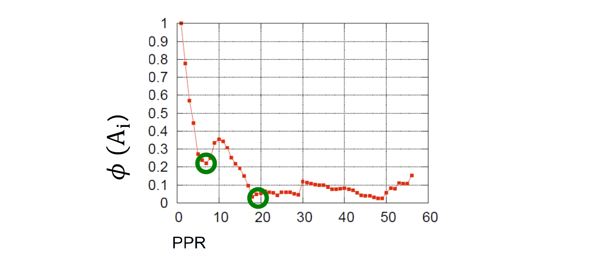
Calcolo in tempo lineare
La curva di Sweep può essere calcolata in tempo lineare:
- Iteriamo sui nodi
- Manteniamo una tabella hash dei nodi in
- Calcoliamo dove:
- cut(A_{t+1}) = cut(A_{t}) + d_{i+1} - 2\text{#(archi da u_{i+1}A_t})
7.4.4 PageRank approssimato
Ipotizziamo di effettuare un pagerank con teletrasporto a partire dal nodo . Sia un vettore di residui con tutte le componenti nulle tranne la componente . Supponiamo di voler approssimare il vettore che contiene i pagerank score con un vettore inizialmente posto a 0, ammettendo un errore controllato dalla costante . Definiamo l'azione di push:
push(u, r, q):
r' = r
q' = q
# prendiamo (1-beta dal residuo) e cediamolo ad r'(u)
r'(u) = r(u) + (1-beta) * q(u)
# resta q(u)*beta residuo disponibile
# di questo ne teniamo solo la metà
q'(u) = (q(u) * beta) * 0.5
# cediamo l'altra metà al rank dei vicini N(u) di u
for v : (v,u) in E:
residuo_rimanente = 0.5 * ( beta * q(u) ) /
q'(v) = q(v) + ( residuo_rimanente / |N(u)| )
# ritorniamo i vettori aggiornati
return r', q'
Possiamo dare per assunto che il residuo sia tale che: Quindi se è alto vuol dire che nella approssimazione stiamo sottostimando il reale score del nodo . Come facciamo a sapere se è alto? Possiamo ancora una volta dare per assunto che se si verifica allora il residuo è alto. Quando non si verifica più tale condizione per il nodo , allora abbiamo raggiunto una buona approssimazione del suo pagerank score. Quindi definiamo il PageRank approssimato come segue:
ApproxPageRank(S, beta, eps):
r = [0, ..., 0]
q = [0, ..., 1, ..., 0] # asserire il nodo di partenza
while (esiste u : ( q(u) / d(u) >= eps ) :
r, q = push(u, r, q)
return r, q
Questo algoritmo utilizza inoltre il lazy random walk, secondo la quale lo step di aggiornamento è definito come segue: Ovvero con probabilità del % si sta fermi, con la restante ci si muove.
Il pagerank approssimato calcola il personalized pagerank in un tempo pari a , mentre la power iteration richiederebbe un tempo pari a . Si può dimostrare che se esiste un taglio con conduttanda e volume , allora il metodo trova un taglio di conduttanda .
7.5 Motif-Based Clustering
Preso in input un grafo , per ogni tipo di motif (sottografo, graphlet) possibile si vanno a contare le occorrenze del sottofrafo in .
Focalizziamoci su un motif specifico in e prendiamo . Definiamo:
- Motif cut: quanti motif hanno endpoint sia in che fuori da
- Motif volume: quanti endpoint (stub) dei vari motif cadono in
- Motif conduttanza: il rapporto tra il motif cut ed il motif volume
Ovvero abbiamo ri-definito le metriche precedenti, utilizzando i motif anziché gli archi.
Considerato un certo motif , l'algoritmo consiste in un primo passo di preprocessing, in cui si calcola la matrice , dove l'elemento indica il numero di volte in cui l'arco partecipa ad una istanza del motif .
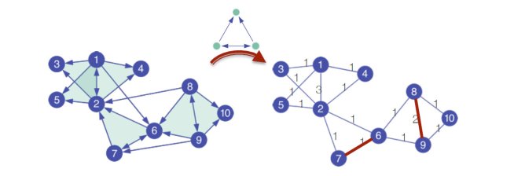
Dopodiché si calcola un approximated PageRank utilizzando la matrice pesata e si procede con lo sweep per andare ad individuare i cluster.
7.6 Louvain - Ottimizzazione della modularità
L'algoritmo di Louvain è un algoritmo di community detection che tenta di ottimizzare la modularità con un approccio greedy e con un running time . Questo algoritmo funziona anche con grafi pesati ed è ampiamente utilizzato per grosse reti.
7.6.1 Riformulare la modularità
Considerando il configuration model come modello nullo, dato un grafo ed un partizionamento , abbiamo definito la modularità come segue:
Essendo che non si considerano mai archi con endpoint su cluster differenti, possiamo andare a riformulare la modularità utilizzando la funzione Delta di Dirac . Supponiamo che indichi il cluster a cui il nodo è associato, allora:
Quindi riscriviamo la modularità:
7.6.2 Idea generale
L'algoritmo si divide in due fasi:
- La prima fase consiste nell'esaminare i cluster a coppie e spostare i nodi da un cluster ad un altro se e solo se si ha un incremento della modularità.
- La seconda fase aggrega i cluster in supernodi per costruire una nuova rete.
Si ritorna quindi alla prima fase, fino a che non si ha un supernodo che rappresenti l'intera rete.
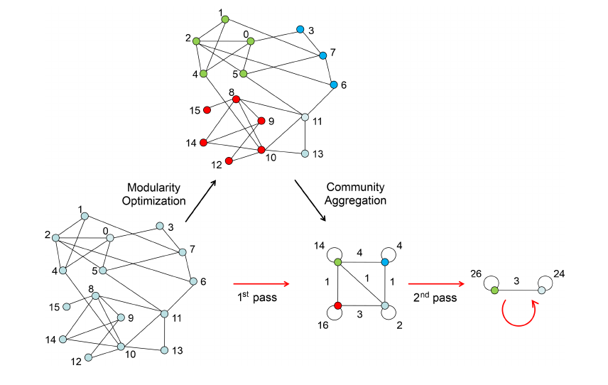
7.6.3 Prima fase - Partizionamento
All'inizio dell'algoritmo ogni nodo verrà inserito in un cluster distinto. Dopodiché, per ogni nodo l'algoritmo effettuerà due calcoli:
- Si calcola la modularità quando si inserisce nella comunità di un vicino
- Si sposta nella comunità del nodo che da il maggiore guadagno .
La fase 1 finisce quando non ci sono movimenti che possano aumentare il guadagno. L'ouput dell'algoritmo dipende dall'ordine in cui i nodi sono processati. La fase finisce con un massimo locale della modularità.
Calcolo della modularità su singolo cluster
A cosa corrisponde quando muoviamo il nodo nella comunità ? Supponiamo di voler muovere il nodo dalla comunità alla comunità , quindi vogliamo calcolare Dove corrisponde al gain che si ha quando si toglie da e si forma una ulteriore comunità formata solamente da , mentre è il gain che si ha spostando all'interno di .
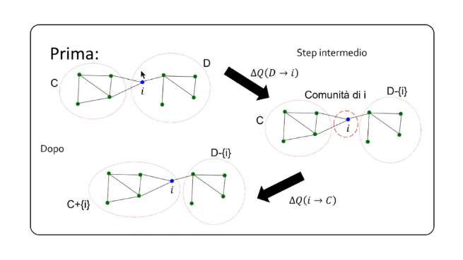
Definiamo la modularità per un singolo cluster come: Definiamo: Ovvero la somma degli archi (o dei pesi degli archi) tra nodi all'interno del cluster .
Definiamo: Ovvero la somma degli archi (o dei pesi degli archi) di ogni nodo nel cluster .
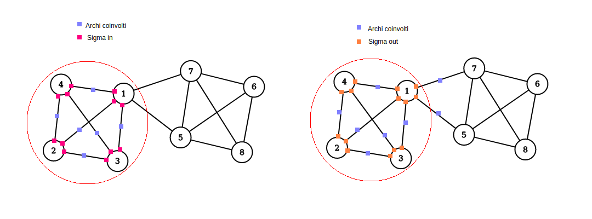
Riscriviamo come segue: Quindi
Derivare
Abbiamo considerato il nodo , distaccato dal cluster , come un cluster a sé stante. Dobbiamo calcolare . Prima di tutto, definiamo le quantità:
- che equivale alla somma degli archi (o dei pesi degli archi) tra ed il cluster .
- che equivale alla somma degli archi (o pesi degli archi) del nodo , ovvero il suo grado.
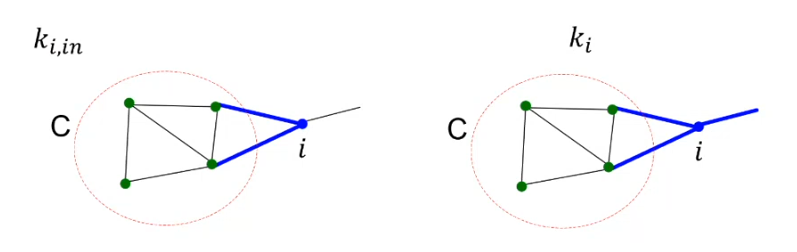
Definiamo la modularità prima del merging di su : E la modularità dopo il merging: Allora possiamo dire che Con lo stesso principio si calcola .
7.6.4 Seconda fase - Collasso
Tutte le community ottenute nella prima fase sono contratte in super-nodi, e una nuova rete viene creata di conseguenza:
- I super-nodi sono connessi se esiste almeno un arco che connette le due community
- Il peso dell'arco tra due super-nodi è pari alla somma dei pesi degli archi dei nodi che connettono le community
- I super-nodi hanno dei cappi con peso pari alla somma dei pesi degli archi interni.
Dopodiché viene ripetuta la prima fase utilizzando la nuova rete.
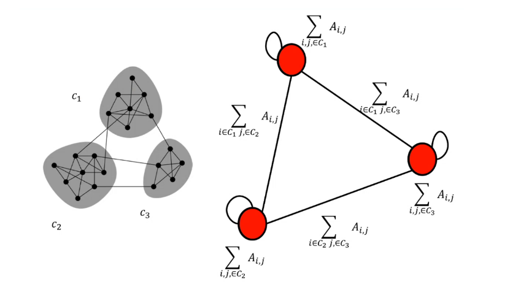
7.7 Trawling - Analisi di grandi grafi
L'algoritmo Trawling permette di identificare delle piccole comunità all'interno del web. Utilizzando questo algoritmo, è possibile identificare i topic comuni tra le pagine web: pagine che parlano dello stesso topic sono collegate tra loro con alta probabilità.
7.7.1 Idea
Supponiamo di disporre in due layer differenti (1, 2) gli stessi nodi di un grafo . Colleghiamo il nodo dal layer 1 con tutti i suoi vicini nel grafo sul layer 2. Due nodi e che stanno all'interno della stessa comunità, molto probabilmente avranno tanti vicini in comune.
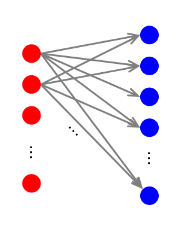
7.7.2 Definire il problema
Si vogliono enumerare i sottografi completi bipartiti , dove con indichiamo il numero di nodi a sinistra (layer 1), dove ognuno di essi si collega agli stessi nodi sulla destra (layer 2).
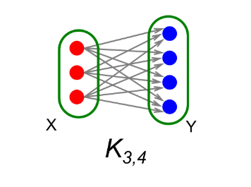
7.7.3 Frequent Itemset Enumeration
Utilizziamo le tecniche del Market Basket Analysis (MBA) per risolvere il problema. Definiamo un universo di item. Definiamo i basket come sottoinsiemi di , . Definiamo il supporto come un threshold di frequenza. Vogliamo trovare tutti i sottinsiemi tale che in almeno insiemi , ovvero gli item in sono stati "acquistati" insieme almeno volte.
Colleghiamo il task del MBA al grafo bipartito: se il nodo ha come vicini i nodi , allora definiamo il basket . Il nostro sarà un insieme di cardinalità che si presenta in insiemi (ovvero avremo nodi con gli stessi vicini). Cercare vuol dire cercare un insieme con una frequenza minima e di cardinalità . Definito il problema, basta utilizzare uno tra gli algoritmi di MBA per trovare gli itemset frequenti.
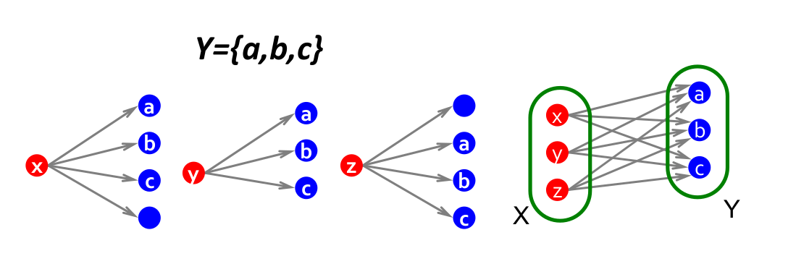
Le comunità risultati si sovrappongono: un nodo potrebbe stare in più comunità contemporaneamente (overlapping).